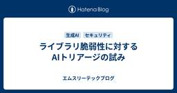
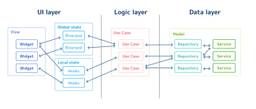
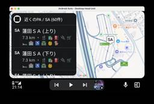
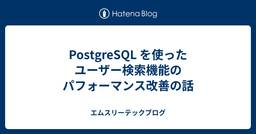
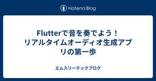
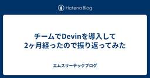

エムスリーテックブログ
https://www.m3tech.blog/
エムスリー(m3)のエンジニア・開発メンバーによる技術ブログです
フィード

ライブラリ脆弱性に対するAIトリアージの試み 1
1
エムスリーテックブログ
お疲れ様です。エムスリーでセキュリティなどを担当している山本です。 最近は「生成AI x セキュリティ」にも関心を寄せており、色々と試していますので、その辺りの話をブログリレーの中で書いてみたいと思います。 テーマは「検出された少ないライブラリ脆弱性にどのようにAIを武器にして向き合っていくか」です。 脆弱性検出とその対処 脆弱性情報から脆弱性の実効性探索へ 脆弱性情報の収集と形式化 トリアージの試み 「脆弱性判定プロンプトを作れ」 実際のプロジェクトに適用 人間による評価 今後やりたいこと 他にも試していること We are hiring!
2日前

RiverpodとFlutter Hooksで作る、宣言的UIに適したFlutterアーキテクチャ
エムスリーテックブログ
デジスマチームの荒谷(@_a_akira)です。最近の特技は、家の外観1枚と内装4,5枚の写真から施工したハウスメーカーを特定することです。AIにはまだ負けません。 この記事はデジスマチームブログリレーの10日目の記事です。 普段はデジスマ診療のアプリ開発を担当していますが、今年の初めから新規事業のアプリをFlutterで開発しました。このアプリは、エムスリーで7つ目のFlutterアプリとなります。 新規開発にあたり、国内外の設計事例やカンファレンスを調査しましたが、「Flutterのアーキテクチャにおける正解は何か」という問いに、未だ明確な答えがないのが現状だと認識しています。 デジスマの…
2日前

Android Auto向けのアプリを開発してみた
エムスリーテックブログ
デジスマチームでソフトウェアエンジニアをしている大和です。車で全国各地の温泉を巡るのが趣味です。今回は運転中の困りごとを解決するために開発したAndroid Auto向けアプリの開発過程を通して、開発方法について共有していきます。 この記事はデジスマチームブログリレーの9日目の記事です。 開発のきっかけ 開発するアプリの内容 Android Autoについて Android Autoアプリ開発の基礎知識 制限 サポートされているアプリカテゴリ Android for Cars アプリライブラリとテンプレート 開発環境の設定 Android Studio (Android SDK) の設定 開発…
3日前

PostgreSQL を使ったユーザー検索機能のパフォーマンス改善の話
エムスリーテックブログ
こんにちは、デジスマチームでソフトウェアエンジニアをしている伊藤です。 この記事はデジスマチームブログリレーの8日目の記事です。 今回は我々が開発しているデジスマ診療 (以降、デジスマ) で、医療機関向けに提供しているユーザー検索機能のパフォーマンスを PostgreSQL の機能を活用して改善した話について紹介します。 ユーザー検索の課題感 データ構造 検索クエリ Step 1: 仕様の変更で対応できることはないか? Step 2: 部分一致検索のままで高速化できないか? (pg_bigm の導入) Step 3: インデックスを効率的に活用できないか? (2段階検索への分解) Step 3…
4日前

Flutterで音を奏でよう！リアルタイムオーディオ生成アプリの第一歩
エムスリーテックブログ
こんにちは、デジスマチームでソフトウェアエンジニアをしている立花です。 最近の趣味は ゆる言語学ラジオ - YouTube を聞くことです。宜しくお願いします。 このブログはデジスマチームブログリレーの7日目の記事です。 Flutterでリアルタイムオーディオ生成 この記事ではFlutterアプリでリアルタイムに音を生成・再生する仕組みを実装し、最終的にAndroid実機で音を鳴らすまでを解説します。 この記事を読むことでFlutterアプリにリアルタイムオーディオ生成機能を組み込むための第一歩が踏み出せるはずです。 Flutterで音の波形を生成・再生する それでは具体的な実装方法を見ていき…
6日前

チームでDevinを導入して2ヶ月経ったので振り返ってみた
エムスリーテックブログ
こちらはデジスマチームブログリレー6日目の記事です。 デジスマチームで開発チームのリーダーをしている田口です。日々目まぐるしくアップデートされていくAIエージェントを使って、どう生産性を向上させるかを考えることが多くなってきました。そんな中、今回はチームでDevinを導入した結果についてまとめてみました。
7日前

Kubernetes Podの計画的スケールでシステム負荷とコストを最適化したい!
エムスリーテックブログ
こんにちは。デジスマチームの伴です。この記事はデジスマチームブログリレーの5日目の記事です。 先週は SRE チームとして GitHub 移行をやっている話を投稿しましたが、兼務しているデジスマチームではインフラ周りを担当しており、Kubernetes のメンテナンスなどをしています。 デジスマ診療（以降、デジスマ）では、利用者および利用施設の拡大に伴い、サーバが処理するリクエスト数も増加しています。インフラ側ではこれに対応するため、様々な施策を講じてきました。 本記事は、講じてきた様々な施策のうち、KubernetesのPodを予定した時間に事前にスケールアウトさせる仕組みを整備して、システ…
8日前

90秒かかるDELETE文の原因を探る【PostgreSQL】
エムスリーテックブログ
こんにちは！ デジスマチームの山田です。これはデジスマチームのブログリレー4日目の投稿です。 事業が成長してユーザー数やトランザクションが増加すると、それに比例して扱うデータの量やバリエーションも増加します。サービス規模の拡大に伴い発生する課題の1つにスロークエリがありますが、デジスマ診療においてもサービスの成長とシステムの健全性を維持するためにクエリの改善に日々向き合っています。 データベースの気持ちを知りたい
9日前
Firebase Remote Config で Web の A/B テストを実現する
エムスリーテックブログ
はじめまして、5月に中途入社したデジスマチームの東です。入社してから早くも3ヶ月が経とうとしていますが、日々学びがあり充実しております。 このブログはデジスマチームブログリレーの3日目の記事です。 この記事では Firebase Remote Config を利用して Web の A/B テストを実施する方法を紹介します。
10日前
JavaScript の Object 比較を変えるか？ 新しいプロポーザル proposal-composite とは
エムスリーテックブログ
皆さん、こんにちは！ デジスマチームの小島(@jiko_21)です。 このブログはデジスマチームブログリレーの 2 日目の記事です。 JavaScript の進化は止まりませんね！ 毎年、新しい仕様が TC39（ECMAScript の標準化委員会）にて議論され追加されています。 今回は、最近 TC39 に追加された、proposal-compositeについてご紹介します。これは、JavaScript におけるObjectの比較という、長年の課題を解決する可能性を秘めた興味深い提案です。
11日前
Server Functions っぽい仕組みを自作して Lambda 関数呼び出しに適用してみた
エムスリーテックブログ
デジスマチームの池奥です。 新卒2年目のソフトウェアエンジニアです！ 先週、人生で初めて外部モニターを買いました。快適な作業環境を手に入れたと思ったのですが、モニターのある環境に慣れておらずすっかり持て余しています。今のところ YouTube ビュワーとして活躍しています。 このブログは、デジスマチームブログリレーの 1 日目の記事です 🎉 イントロ 普段、私はNode.jsでバックエンドを実装することが多いのですが、一部の処理を AWS Lambda のような別の実行環境に切り出したい、というシーンに時々遭遇します。このような場合、Lambda の実装は別のパッケージに置き、元のサーバーから…
11日前
これで依頼対応は絶対に漏れない！ 簡単確実Slackワークフロー
エムスリーテックブログ
エンジニアチームの仕事は開発、調査、障害対応などあって日々チケットを起票しては消化しながらお仕事を皆様回しておられるのではないかと思います。一方で、チケットにすることのない作業依頼というのも少なくないのではないでしょうか。「ミーティングのリスケ先日程を探して移しておいてください」などなど⋯ そして次に起こる問題は「Slack上で依頼が流れてしまって対応が漏れていた」ですね？ 作業依頼の対応漏れというエラー、再発防止はどうしましょう、すべての依頼でチケット切ることにしますか？ はい、それが確実なのですが、体裁に沿ったチケットを書くというのはそれなりに重い作業です。依頼をためらわせてしまうという難…
12日前
エムスリーの GitHub 移行、SRE の道中記
エムスリーテックブログ
こんにちは。エムスリーで SRE エンジニアをしている伴です。 このブログは SRE チームブログリレー 5日目の記事です。 M3 Tech Blog でも AI を開発に活用した記事が多く出ていますが、弊社では開発への AI 活用が積極的に進められています。 その流れで、GitHub が構築している AI のエコシステムを積極的に活用するため、昨年末からセルフホスティング版の GitLab Server から GitHub Enterprise Cloud への移行を進めています。 SRE チームは、GitLab の運用経験を活かし、GitHub への移行支援と運用サポートを担っています。 …
15日前
Claude Code SDKでClaude Code Webを作ってみる
エムスリーテックブログ
エンジニアリンググループ ゼネラルマネージャーの横本(@yokomotod)です。 このブログはSREチームブログリレー4日目の記事です。 昨日は山本さんによるSRE作業もGemini CLIで効率化する記事でした。 www.m3tech.blog 続けて今日もAIコーディング関連、Claude CodeのSDKが気になって触ってみた知見を紹介します。 言わずもがなClaude Codeは強力なツールで、最近はHooksなども登場し、拡張性もどんどん強化されています。 しかし、まだまだもっと自由に機能強化して「オレの最強のClaude Code」を作ってみたいですよね。 というわけで、Clau…
16日前
個人を活かしてチーム力も最大化する、属人性解消への取り組み方
エムスリーテックブログ
こんにちは。SREチームのチームリーダーをしている後藤です。 このブログはSREチームブログリレーの2日目の記事になります。 私がSREチームのチームリーダーに就任してからもうすぐ3年になります。 その間に様々な課題に取り組んできたのですが、中でもチームの属人性について考える機会は多くありました。 本記事ではSREチームが属人性の解消に向けてどう向き合ってきたか振り返りまとめていきたいと思います。 属人性についてディスカッションする動物たち generated by Gemini
19日前
SRE NEXT 2025 に行ってきました #srenext
エムスリーテックブログ
こんにちは！ エムスリーエンジニアリンググループ、SREチームの平岡(@uhtter)です。 このブログはSREチームブログリレーの1日目の記事になります。 今年もこの季節がやってまいりました。 2025年7月11日と12日の2日間で開催された、 SRE NEXT 2025 に行ってきました。 今回の記事はその参加レポートです。 イベント公式マスコットの信頼けろぺん君。信頼性は高く、そしてかわいい。
19日前
Pythonのスタブライブラリを生成して、型ヒントのないライブラリも快適で堅牢に利用する
エムスリーテックブログ
AI・機械学習チームブログリレー13日目の記事を三浦 (@mamo3gr) がお送りします。 Pythonで型ヒントを補足するためのサードパーティのスタブライブラリにコントリビュートしました。 それを通して入門したスタブファイルの作り方を紹介します。 便利なPythonの型ヒント 型ヒントを補助するスタブライブラリ スタブファイルの作り方入門 stubgenで下地をつくる pathlib,importlib,inspectを組み合わせたモジュール・クラスの列挙と書き換え __init__ とフィールドの追加 その他、便利そうなツール 実際どれくらい便利になるか Before After まとめ…
1ヶ月前
Workload Identity Federationの安全を支える技術
エムスリーテックブログ
エンジニアリンググループ ゼネラルマネージャーの横本(@yokomotod)です。 このブログはAI・機械学習チームブログリレー 12日目の記事です。 ちょうど昨日の大垣さんの記事でも触れられていましたが、エムスリーではWorkload Identity Federation（以下WIF）*1を活用して、秘密情報を持つことなくGitLabのCI/CDからGoogle Cloudへ認証しています。 偶然ですが、昨日の活用方法の話に続き、今日はその裏側寄りの話をしようと思います。 www.m3tech.blog なぜWIFは秘密情報なしに安全にアクセスできるんでしょうか？ 攻撃者がなりすまそうとし…
1ヶ月前
GCPでVertex AIを使ってAIコーディングエージェントの認証をセキュアでポータブルに管理してみる
エムスリーテックブログ
こんにちは、機械学習エンジニア / CTOの大垣です。 このブログはAI・機械学習チームブログリレー 11日目の記事です。 前日は池嶋さんによる 「先週何したっけ？」をゼロに：Obsidian + Claude Codeを業務アシスタントに - エムスリーテックブログ でした。 後段にAI活用があることで結果的にメモ習慣も改善されるなぁと思いました。 さて、本日もAI活用の記事ですが、社内、特にAIコーディングエージェントから利用するときの認証の話をしようかなと思います。 みなさんの会社ではAIコーディングエージェントの認証管理どうしていますか？ エムスリーでは、Gemini、Copilot、…
1ヶ月前
「先週何したっけ？」をゼロに：Obsidian + Claude Codeを業務アシスタントに
エムスリーテックブログ
AI・機械学習チームの池嶋 (@mski_iksm)です。 このブログはAI・機械学習チームブログリレー 10日目の記事です。 前日は鴨田さんによる「BigQueryのCronJob向けQAテストを自動化した話」でした。 2025年6月現在、MarkdownエディタのObsidianが注目を集めています。 これはLLM（大規模言語モデル）の活用が普及し、ObsidianとAIを組み合わせることで、単なるメモツールを超えた「知的業務アシスタント」として機能するようになった点が要因の1つと言えるでしょう。 従来のメモツールが「記録」に留まっていたのに対し、AIとの連携により「記録→検索→分析→洞察…
1ヶ月前
BigQueryのCronJob向けQAテストを自動化した話
エムスリーテックブログ
AI・機械学習チームの鴨田です。このブログはAI・機械学習チームブログリレー 9日目の記事です。 年末休みに話題の書籍『Tidy First?』を読みました。コード整理の実践的な手法や作業粒度によるトレードオフなどを学び、「最初から完璧な設計なんてできるわけない。コード品質を保つための整理が大切だよなー」と改めて実感しました。 品質を保ちながら開発速度を上げるには、信頼できるテストが欠かせません。これは開発における普遍的な真理ですが、特にQA環境でのテストは地道で骨の折れる作業になりがちです。皆さんの現場でも、似たような課題を抱えているのではないでしょうか？ 今回は手動で実施しているQAテスト…
1ヶ月前
退屈な分析はAIにやらせよう
エムスリーテックブログ
AI・機械学習チームの氏家 (@mowmow1259)です。 このブログはAI・機械学習チームブログリレー 8日目の記事です。 前日は高田さんによる「BETWEENに気をつけろ！ BigQueryの日次集計で罠にハマった話」でした。 最近LLMによるVibe Codingが世間を賑わせています。 エムスリーでも積極的にコーディングエージェントの導入が進んでおり、かくいう私もClaude Code君がいないと生きていけない体にされてしまいました。 コーディングエージェントのおかげで典型的な開発タスクはかなり効率化されてきているものの、面倒なタスクもまだまだ残されています。 分析です。 前日の高田…
1ヶ月前
BETWEENに気をつけろ！BigQueryの日次集計で罠にハマった話
エムスリーテックブログ
こんにちは。AI・機械学習チームの高田です。このブログはAI・機械学習チームブログリレー7日目の記事です。 はじめに 私たちAI・機械学習チームでは、機械学習モデルの学習データ準備やデータパイプライン開発のために日次でのデータ集計をしています。これらの集計データは、モデルの精度評価や特徴量エンジニアリングにおいて重要な役割を果たします。 先日、月次レポートを作成する際に、とあるログデータの日次集計の合計値と月次集計の値に差異があることに気づきました。単なるデータ欠損にとどまらない重大なバグの可能性もあるため、原因を徹底的に追求することが必要でした。
1ヶ月前
API Key 無しで Gemini をセキュアに Google Apps Script から利用する
エムスリーテックブログ
本文に関係ないドッグランに行ったときの犬たち こんにちは、AI・機械学習チームの山本（@hiro_o918）です。 このブログは AI・機械学習チームブログリレー 5 日目の記事です。 これまでのリレー記事でも出てきたように、弊社でも AI を活用したプロダクト開発が進んでいます。 それに加えてビジネスサイドでも AI 活用が進んでおり、OSS 版 Dify を導入・運用したり、Google Workspace に付帯する Gemini を活用したりしています。 このような状況から、AI 機能の実装に関してビジネスサイドから相談を受ける機会が多いのですが、その際には利便性だけでなくセキュリティ…
1ヶ月前
「英語話せない問題」を2時間のVibe Codingで解決してみた
エムスリーテックブログ
AI・機械学習チームの中村伊吹(@inakam00)です。 このブログはAI・機械学習チームブログリレー 4日目の記事です。前日は苅野(@hkford3)さんの結婚式ネタでした。今回は新婚旅行ネタです。 先日新婚旅行でハワイへ行くことになりました。楽しみな反面、1つ大きな不安がありました。 ハワイの夕焼け 英語話せない問題 それが英語話せない問題です。 簡単な英会話ならできるものの、複雑な話を伝えることは難しいです。 そのほかにも、発音がうまくできずに伝わらなかったり、現地の訛りがあったりすると、いよいよ大変になってしまいます。 万が一に備えて、何か対策をしておきたいと出国前から考えていました…
1ヶ月前
自作結婚式受付アプリが当日バグり散らかして現場運用の大切さを噛み締めた話
エムスリーテックブログ
こんにちは、先月結婚式を挙げて一息ついた AI・機械学習チームの苅野(@hkford3)です。 このブログはAI・機械学習チームブログリレー 3日目の記事です。前日は@inakam00が結婚式をLINE BotとAIでエンジニアリングしてみた話でした。今日の記事も結婚式の話です。結婚式はなんぼあってもいいですからね。 結婚式の受付では新郎新婦の知り合いが担当する受付で名前を名乗り参列登録することが多いです。名前を聞き返したり漢字を聞いて名簿と照会したりと意外と受付はやることが多くて大変そうでした。そこで受付の負担を減らそうと思い QR コードで受付登録ができるアプリを作ったところ、期待とは逆に…
1ヶ月前
自分の結婚式をLINE BotとAIでエンジニアリングしてみた話
エムスリーテックブログ
AI・機械学習チームの中村伊吹(@inakam00)です。 このブログはAI・機械学習チームブログリレー2日目の記事です。 記念すべき1日目は北川さん(@kitagry)の「GCPのテレメトリーのMCPサーバーを作ってボトルネックを発見する」でした。 この前結婚式を挙げたんですが、「せっかくだから何かエンジニアらしさを見せたいな」と思い、「結婚式スマイル集める君」というLINE Botを開発して式中に運用しました。 技術で結婚式を盛り上げたい方の参考になれば嬉しいです。 これは記事とは何も関係のない、地元の青森・正立食堂のうに御前です。一生分のうにを食べました。 なぜ作ったのか 「結婚式スマイ…
1ヶ月前
GCPのテレメトリーのMCPサーバーを作ってボトルネックを発見する
エムスリーテックブログ
AI・機械学習チームの北川(@kitagry)です。 このブログはAI・機械学習チームブログリレー1日目の記事です。 最近Claude Codeがとても流行っている気がしますね。 Vimmerである僕としてはCLIで使えるClaude Codeはとてもありがたいです。 NeovimでもDiffを出したり出来るclaudecode.nvimをとても愛用しています。 カメラを見つめる猫 ※本編には関係ありません
1ヶ月前